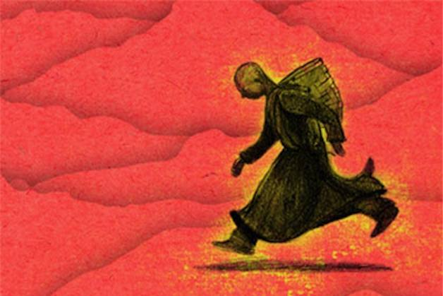

「Stephen Greer の空中歩行体験」からも、チベット密教の「ルン・ゴム・パ」は意識障害の副産物だと判断できる

(image surce: The Lung-Gom-Pa Runners of Old Tibet - Prepare For Change https://prepareforchange.net/2016/07/09/the-lung-gom-pa-runners-of-old-tibet/ )
前置き
- チベット密教の「ルン・ゴム・パ」とは…
^ 黒魔術を教えるラマの寺院には馬よりも速く走る僧がいたとの伝承があり、この速歩術はチベットではルン・ゴム・パ (rlung-sgom-pa) と呼ばれる。ルン (rlung) とは「風」でゴム・パ (sgom-pa) とは「瞑想」。この歩法によって数日間も休むことなく非常に速く走り続けることができるといわれている。これには天台宗や修験道の回峰行の行者との関連も指摘されている。 ref: ミラレパ - Wikipedia https://ja.wikipedia.org/wiki/%E3%83%9F%E3%83%A9%E3%83%AC%E3%83%91
- この「ルン・ゴム・パ」は意識障害（トランス状態を含む）の副産物（＝幻覚や錯覚）だ…ということを強く示唆する事例を見かけたので記録しておく。その事例とは後述する Stephen Greer の体験。
コメント 1
Stephen Greer の証言自体は、たぶん意図的な嘘ではないと思える。彼は、「体が軽くなって半浮遊の状態となり、歩幅が異常に伸び、長距離を短時間に移動できた」と本気で思いこんでいる筈。
だが、実際は「体が軽くなって半浮遊の状態となり、歩幅が異常に伸び」という感覚は意識障害による幻覚や錯覚だとみなすのが妥当。当然、普通に長時間かけて移動したが、missing-time と同じ機序で記憶障害も併発していたために、短時間しか経過していないと思いこんだだけ。
この、
「ルン・ゴム・パ」は意識障害（トランス状態を含む）の副産物（＝幻覚や錯覚）だ
という私の仮説には反証可能性がある。観測機材で実際に「ルン・ゴム・パ」の証拠を記録すればよい。たとえばビデオカメラで撮影でもよい。それが提示できれば、私の仮説は反証される。だが、未来永劫、そのような証拠は提示できないだろう。書籍やネットに出回っている「ルン・ゴム・パ」（「ルン・ゴム」を含む）の映像はその全てが静止画のみ（しかも中にはオカルト雑誌 『ムー』 の取材者（or 編集者）による撮影だったりしている）。
なお、「ルン・ゴム・パ」を実際に目撃したという第三者の証言は採用できない。なぜなら、UFO 目撃事例でも現場で複数人がそろって天を覆い尽くすほどの巨大 UFO を目撃したという事例が多数ある（がその現場以外では誰も目撃していない）ゆえに。このような不可解な同時目撃者が生じる機序を、私は「共鳴認知」仮説によって説明している。
コメント 2
禅やチベット仏教（チベット密教を含む）を賛美する人々が少なくない。彼らは皆、禅やチベット仏教には、俗人が窺い知ることができぬ、世界の奥深い真理に通じていると錯覚している（錯覚させられている）。
だが、私は禅もチベット仏教も全否定する。禅もチベット仏教も完全な錯誤や欺瞞という土台の上に築かれている。よって有害無益でしかない。（諺には「嘘から出た真」とあるが）嘘（偽）から真は生じない。
「世界の奥深い真理」それ自体が全くの虚構であるから、その虚構でしかない「世界の奥深い真理」を大悟したところで無益だし、その虚構を土台にして何をどうやって構築しようがすべては錯誤や欺瞞でしかない。よって大悟や解脱を目指す人々や、それを獲得したと自認する方々には実に気の毒なことだが、全て徒労かつ有害無益でしかない。
音声書写（自動生成）
▼展開
consider what happened to Dr Stephen Greer MD who's very well known for starting the group C 9:45 seti the center for the study of extraterrestrial intelligence and is also spearheaded largely 9:51 the disclosure movement it was October 1973 and Greer was celebrating his 18th birthday 10:01 he had gone hiking in the mountains outside his home in Boone North Carolina when he saw a UFO 10:09 it was a short time later he was approached by a quote an extraterrestrial biological life form 10:16 the next thing he knew he was being transported into a craft and on board he was greeted he says 10:22 by short four foot tall humanoids with soft deer-like eyes the craft turned transparent 10:30 at one point to reveal a beautiful field of stars and what followed was for him a deeply spiritual 10:37 experience during which he and the et's meditated together and experienced a cosmic consciousness 10:45 so Greer had no fear during this experience instead he calls it quote an incredible encounter 10:52 entirely different from stories usually circulated about extraterrestrial contact 10:58 I wouldn't call it entirely different there's a lot of stories very much like this but at any 11:04 rate this experience ended he was removed from the craft and placed back near his original location 11:12 but it was what happened immediately following his encounter that left him even more amazed 11:17 as Stephen Greer writes and again I quote I found myself back on the mountain under the beautiful 11:24 Starry Sky only to experience another strange phenomenon I was perhaps 100 yards further down 11:32 the Gravel Road as I started down the mountain I found that with each step I was in a state of 11:39 near weightlessness as if walking on the moon my steps were actually leaps of 20 to 30 feet at once 11:48 it was more like floating than walking there was a strange magnetic anti-gravitational effect around 11:55 me making me lighter it wasn't a product of my imagination my physical body was light I was just 12:04 as happy as a lark here I was fresh from this experience on an ETV and now bounding down the 12:11 mountain traveling in Boeing Boeing Boeing leaves across impossible distances with each step it was 12:20 incredibly blissful as I got closer to Town the phenomenon faded and my weight returned to normal 12:28 so again this is clear this is not an out of body experience this is happening during full waking consciousness Greer was totally amazed by this event and following this encounter in this 12:41 levitation event he began meditating regularly and calling out to et's telepathically and it 12:48 was just a few years later that he had another incredible levitation experience and as Greer 12:54 writes in his own words as I was walking in the field behind the manor where we were working 13:01 I spontaneously without effort or forethought levitated it was reminiscent of the prolonged 13:09 experience of bounding down the Mountainside after my ET encounter in October of 73. 13:15 this time I just lifted vertically maybe two or three three feet above the ground 13:23 instead of walking to my destination I glided there in an upright vertical levitation experience 13:31 and then at the moment my intellect kicked in and I exclaimed my god look what's happening how 13:37 can I be doing this I settled down to earth it was halted by my own intellect and ego 13:45 so following this Greer came to the conclusion that all humans likely can levitate and I really 13:51 like what he says about this as Stephen Greer writes ultimately is recognizing and embracing 13:58 the power of God within each of us after this experience it became increasingly clear that 14:05 we have within us any capability and that anyone can acquire and develop them there is sometimes 14:11 a tendency by people involved in various spiritual and religious groups to put people 14:17 who have this level of experience or knowledge on a pedestal as if it's unattainably Unique 14:23 it's not and that's very important to understand it is in fact a disservice to the nature and 14:31 potential of humanity to idolize something that should be understood as the birthright of everyone 14:38 I totally agree anyone can do this you don't even need to have UFO contact
DeepL 原文不完全
スティーブン・グリア医学博士に何が起こったか考えてみましょう。彼は、地球外知的生命研究センターの設立で知られ、 地球外知的生命研究センター(SETI)を設立し、情報公開運動の先頭に立ったことでも知られています。 情報公開運動の先頭に立ちました。1973年10月、グリアは18歳の誕生日を迎えていました。 ノースカロライナ州ブーンの自宅近くの山へハイキングに行ったとき、UFOを目撃しました。 それからしばらくして、彼は地球外生命体の言葉を引用して近づきました。 気がつくと、彼はある船に乗せられていて、船上では背の低い4フィートのヒューマノイドに迎えられたという。 鹿のような柔らかい目をした身長1メートルほどのヒューマノイドに迎えられた。 美しい星空を見ることができました。 エッツと一緒に瞑想し、宇宙意識を体験した。 グリアはこの体験で恐怖を感じることはなく、信じられないような出会いをしたと言っています。 地球外生命体との接触について一般に流布している話とは全く異なるものだった。 全く違うとは言い切れませんが、似たような話はたくさんあります。 この体験は終わり、彼は船から降ろされ、元の場所の近くに戻されました。 しかし、さらに驚かされたのは、遭遇の直後に起こったことでした。 スティーブン・グリアが書いているように、また引用しますが、私は自分が美しい星空の下、山に戻ったことに気づきました。 星空の下、別の奇妙な現象を体験していた。 山を下り始めると、一歩一歩が無重力に近い状態であることに気がついた。 まるで月の上を歩いているような無重力の状態になり、一歩一歩が20〜30フィートも跳躍しvているのです。 歩くというより、浮いているような感じです。 気のせいではなく、体が軽かったのです。 ETVで体験したばかりの私は、今、山を駆け下りている。 ボーイング・ボーイング・ボーイングの葉で山を下り、一歩一歩、ありえない距離を移動している。 タウンに近づくにつれ、現象は消え、体重も元に戻った。 このように、これは体外離脱ではなく、完全に覚醒した意識下で起きていることであることは明らかである。 瞑想を定期的に行い、テレパシーでエッツに呼びかけるようになりました。 その数年後、彼はまた信じられないような浮遊体験をしています。 私たちが働いていた荘園の裏の野原を歩いていたとき、私は努力することなく、自然に、また、自分の言葉でこう書いています。 私は努力も考えもせずに自然に浮遊し、それは山々を駆け下りた時の長時間の経験を思い起こcさせた。 73年10月のETとの遭遇の後、山腹を飛び降りたときの長時間の経験を思い起こさせた。 このとき、私は地面から2、3フィートの高さで垂直に浮いただけだった。 目的地まで歩く代わりに、直立垂直浮遊体験でそこに滑空した。 その瞬間、私の知性が目覚め、神よ、見てください、何が起こっているのですかと叫びました。 自分の知性とエゴが邪魔をして、地上に降りたのです。 この後、グリアは、全ての人間はおそらく空中浮遊が可能であるという結論に達しました。 このことについて、スティーブン・グリアが書いているように、最終的には、私たち一人ひとりの中にある神の力を認識し、受け入れることだと言っています。 この体験の後、私たちは自分の中にどんな能力も持っていることがますます明らかになったのです。 私たちはどんな能力も持っていて、誰でもそれを身につけ、発展させることができる。 様々なスピリチュアルな宗教団体に関わる人たちは、このレベルの経験や知識を持つ人を そのレベルの経験や知識を持っている人を、まるで手の届かない存在であるかのように台座に乗せる傾向があります。 そうではなく、それは人間の本質と可能性を損なうものであることを理解することが非常に重要です。 誰もが持っている権利として理解されるべきものを偶像化することは、人間の本質と可能性を損なうものです。 UFOと接触しなくても、誰でもできることに同意します。
☑動画(1:00:00)
ETs Teach People to Levitatemomo
▼展開
Dec 3, 2022 A UFO encounter can have many profound effects upon a witness. A person can be physically affected, with such symptoms as injuries or healings. An encounter affects a person mentally, challenging their world view. A UFO encounter is also a very emotional experience and can trigger the full range of emotions. But it goes beyond that. A close encounter can also transform a person spiritually, triggering a wide variety of paranormal events. It’s not unusual for contactees to experience OBEs, precognition, past-life memories, channeling, ghostly encounters and more. One of the most bizarre effects, one that has received little attention, is that following an encounter, some abductees experience spontaneous human levitation. As unusual as this may sound, there are a growing number of cases. This video presents more than a dozen cases of people who have levitated as a result of a UFO encounter. It appears that ETs are teaching people how to levitate. One case comes from French researchers Aime Michel and Jacques Vallee. It involves an anonymous medical doctor who had a close encounter that healed him of a wound on his ankle and partial paralysis. Following the encounter, the doctor also experienced two episodes of spontaneous human levitation. Whitley Strieber (author of Communion and other books) also reports having a spontaneous levitation experience in his cabin in upstate New York. Strieber had just gone to bed one evening in 1986 when he found himself floating up to the ceiling. He rose up and down several times before finally coming down to a landing in his bed. Following this experience, he began to research these experiences and located two other contactees who reported nearly identical events. Another well-known contactee who has experienced spontaneous levitation is Dr. Steven Greer MD, founder of CSETI. Following an onboard UFO experience at age nineteen in his hometown of Boone, NC, Greer found himself able to make leaping bounds, floating more than twenty feet with each step. Some years later, he experienced another even more profound episode of spontaneous levitation and floated a few feet above the ground for several yards before coming in for a landing. These cases are not as rare as you might think. Researcher Budd Hopkins (author of Missing Time and Intruders) uncovered two cases, both involving children who were having UFO experiences. In each case, the children levitated on several occasions. In both cases, the witnesses connected their levitations to their UFO encounters. A firsthand case comes from a man by the name of Maurice who reports that in 1966, he and his sister were taken onboard a craft. In the hours following the experience, both found that they had the ability to levitate. They floated around the basement for an hour and afterwards played with this ability in their yard. In 1951, eight-year-old Mary Frank (who would later discover she was a contactee) experienced a profound levitation event during which she flew down a corridor for several yards, even turning corners, before coming to a soft landing on her feet. She tried several times to duplicate it but was never able to repeat the experience. In 1953, five-year-old Ramon (who would later become an officer in the Marines) was taken onboard a UFO from his home in California. Following the encounter, he discovered that he was able to levitate. In the days and weeks following his onboard encounter, he levitated on at least three separate occasions, two episodes which were verified by outside witnesses. In another case, a mother went to check on her infant child and discovered that her baby was floating above her crib. Later, her child would report many UFO experiences, including being taken onboard a UFO. Researcher Rey Hernandez reports on the case of Alberto Fernandez, a contactee from Florida. On one occasion, Fernandez’s wife woke to find her husband floating above his bed, sound asleep. Another amazing case comes from fully conscious contactee, Dolly Safran. Throughout her life, Dolly has had numerous onboard UFO encounters. She also reports many cases of spontaneous levitations. While most of these occurred as a young child, even as an adult she experienced levitation, and on several occasions, the related phenomenon of telekinesis. Many other cases exist. The dozen cases presented here are likely only the tip of the iceberg. One thing is clear, there is a connection between human levitation and the UFO contact experience. ETs are teaching people a wide variety of psychic abilities, including the ability to levitate. If you would like to explore more about these cases and others, check out the book, “Not from Here Volume Four.” Now available! https://youtu.be/C7hGChhR8c4 LINK TO BOOK: https://www.amazon.com/dp/B0BJFGZFH1/... LINK TO PRESTON’S WEBSITE: https://prestondennett.weebly.com/
DeepL
2022年12月3日 UFOとの遭遇は、目撃者に多くの深い影響を与えることがあります。人は、怪我や癒しなどの肉体的な影響を受けることがあります。UFOとの遭遇は、精神的に影響を及ぼし、その人の世界観に挑戦することになります。UFOとの遭遇は、非常に感情的な体験でもあり、あらゆる感情を引き起こす可能性があります。しかし、それはそれだけにとどまりません。UFOとの接近遭遇は、人を精神的に変化させ、さまざまな超常現象を引き起こすことがある。コンタクティが体外離脱、予知、前世の記憶、チャネリング、幽霊との遭遇などを経験することは珍しいことではありません。
最も奇妙な効果の1つは、これまであまり注目されてこなかったことですが、コンタクティーの中には、コンタクティーの後に、自然に人間が浮遊するのを経験する人がいます。これは珍しいと思われるかもしれませんが、事例が増えつつあるのです。このビデオでは、UFOに遭遇した結果、浮遊した人々の十数例を紹介しています。どうやら、ETが人々に空中浮揚の方法を教えているようです。
フランスの研究者アイム・ミッシェルとジャック・ヴァレによる事例があります。これは、ある匿名の医師が、足首の傷と部分的な麻痺を癒すために接近遭遇したものです。この医師は、足首の傷と半身不随が治るという接近遭遇をした後、人間が自然に浮遊するエピソードを2回経験した。
ウィットリー・ストリーバー（『コミュニオン』などの著者）も、ニューヨーク州北部の山小屋で自然発生的な浮遊体験をしたと報告している。1986年のある晩、ストリーバーはベッドに入ったところで、自分が天井に浮き上がっているのに気がついた。その後、何度か浮き沈みを繰り返し、最終的にはベッドに着地した。この体験の後、彼はこの体験について調べ始め、ほぼ同じ出来事を報告した他の2人のコンタクティーを探し当てた。
CSETIの創設者であるスティーブン・グリア医学博士は、自然浮遊を体験したもう一人の有名なコンタクティである。グリーアは19歳のとき、故郷のノースカロライナ州ブーンでUFOに乗った後、一歩踏み出すごとに20フィート以上浮き上がり、跳躍することができることに気がつきました。数年後、彼はさらに深い空中浮遊のエピソードを経験し、着陸する前に地上数メートルの高さに浮遊した。
このようなケースは、皆さんが思っているほど珍しいことではありません。研究者のバド・ホプキンス（『Missing Time』と『Intruders』の著者）は、UFOを体験した子供たちが関与した2つのケースを発見しました。どちらのケースでも、子供たちは何度か浮遊しました。どちらのケースでも、目撃者はその空中浮遊をUFOとの遭遇と結びつけています。
モーリスは、1966年に彼と彼の妹がUFOに乗せられたと報告しています。1966年に彼と彼の妹はUFOに乗せられ、その体験の後の数時間に、二人は浮遊する能力があることを発見しました。彼らは地下室で1時間浮遊し、その後、庭でこの能力を使って遊んだという。
1951年、8歳のメアリー・フランク（後にコンタクティであることが判明）は、廊下を数メートル飛び、角を曲がり、自分の足で柔らかく着地するという深い浮遊現象を経験した。彼女はこの現象を再現しようと何度も試みたが、決して再現することはできなかった。
1953年、5歳のラモン（後に海兵隊の将校になる）は、カリフォルニアの自宅からUFOに乗せられました。そのとき、彼は自分が浮遊できることを発見した。船上で遭遇した後、数日から数週間の間に、彼は少なくとも3回浮遊し、そのうちの2回は外部の目撃者によって確認された。
また、ある母親が赤ん坊の様子を見に行ったところ、赤ん坊がベビーベッドの上に浮かんでいるのを発見したケースもある。その後、その子はUFOに乗せられたなど、多くのUFO体験を報告することになる。
レイ・エルナンデス研究員は、フロリダのコンタクティ、アルベルト・フェルナンデスのケースを報告しています。あるとき、フェルナンデスの妻が目を覚ますと、夫がベッドの上に浮かんでいて、熟睡しているのを見つけた。
もう一つの驚くべきケースは、完全に意識のあるコンタクティ、ドリー・サフランのものである。ドリーは生涯を通じて、何度も機内でUFOに遭遇している。彼女はまた、多くの自発的な浮遊のケースを報告している。これらのほとんどは幼い頃に起こったものですが、大人になってからも浮遊を経験し、それに関連したテレキネシス現象も何度か経験しています。
他にも多くの事例がある。ここに紹介した十数例は氷山の一角に過ぎないだろう。ひとつだけはっきりしていることは、人間の空中浮遊とUFOのコンタクト体験の間には関係があるということです。ETは人々に、空中浮遊の能力を含むさまざまなサイキック能力を教えているのです。
これらの事例やその他の事例についてさらに詳しく調べたい方は、"Not from here Volume Four "をご覧ください。現在発売中です。 https://youtu.be/C7hGChhR8c4
LINK TO BOOK: https://www.amazon.com/dp/B0BJFGZFH1/...
プレストンのウェブサイトへのリンク: https://prestondennett.weebly.com/
(2023-02-24) (2023-02-25 追記） 文脈を明確にするため、細部の表現に若干の追加。
初出
「Stephen Greer の空中歩行体験」からも、チベット密教の「ルン・ゴム・パ」は意識障害の副産物だと判断できる （途中1） (2023-02-24)